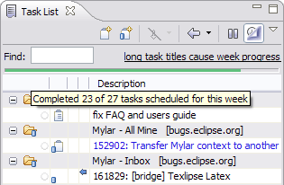
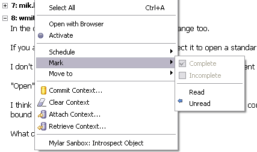
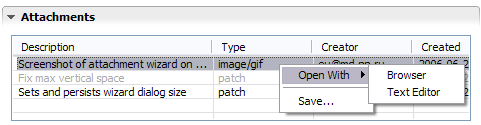
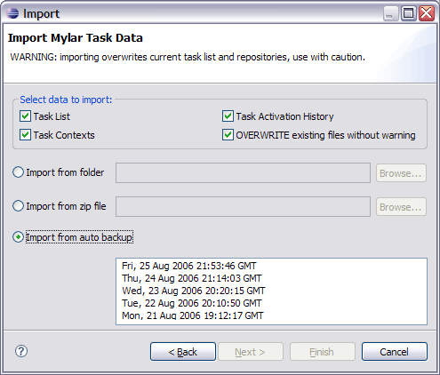
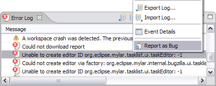
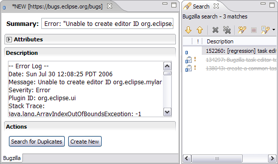
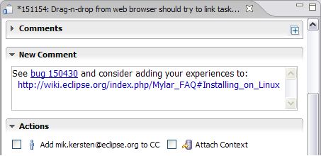

| Task List | ||
|---|---|---|
| | |
| Configuration | Task Repositories | |
Please see the Tips & Tricks page.
Open the UI Legend via the Task List view menu button located next to minimize button in top right corner of Task List view)
There are several ways to create new tasks:
A blue arrow indicates that a task has changed in the repository. To quickly review the differences since the task was last read hover over the task or press F4 to display a tooltip.
To filter the task list to incoming changes and tasks scheduled for this week use the Focus on Workweek button in the toolbar. Another way to quickly find tasks with incoming changes is to use Alt+down in the Task List which jumps to the next task with an incoming change.
In addition the UI Experiments feature that is part of the Mylyn incubator contributes a task list presentation that only shows tasks with incoming changes.
Mylyn provides two kinds of dates for scheduling.
Scheduled Date
Due Date
When in Focus on Workweek mode (right-most toolbar button), the Task List will show a JUnit-style progress bar which indicates progress on the tasks scheduled for that week. Each task that is scheduled for the week but not yet completed adds to the bar. A task completed by you adds to the green progress in the bar. Deferring a task to a future week will also add to the apparent progress because it will remove the task from the current week. Mousing over the bar will indicate details about your progress, such as the number of tasks and hours completed. To avoid the need for manual estimation by default every task is estimated for 1 hour, but if you have longer or shorter running tasks that week you can adjust the estimate in the task editor's Planning page to ensure that the progress bar is accurate.
Note that when in Focus on Workweek mode the Task List will show each of the tasks scheduled for this week. However, overdue tasks and those with incoming changes will also show, making the number of tasks visible not be a reliable indicator of progress on the tasks planned for the week.

Categories show progress for the number of completed tasks.

All comments added since your last reading of a repository task will be automatically expanded when a task with incoming changes is opened. Incoming changes are retrieved with the background synchronization to avoid waiting for the server when opening. Note that a background synchronization is still kicked off upon opening in case changes came in since the last scheduled synchronization. Repository tasks can be explicitly marked as read or unread.

Task repositories are easy to add, and can be named via the Task Repositories view. An icon decoration indicates the repository type. A task repository can be associated with a project, enabling it to be used for actions such as resolving bug hyperlinks. Note: you do not need to associate all of your projects with repositories after updating, since you will be prompted to do this when the associate is needed.

After the Task Repository has been setup and associated with a project, you need to create a new query against that repository to pull down the task list.
See Task-focused programming with Mylyn, Part 1, Querying a repository.
An Open Type style dialog is available for opening tasks (Ctrl+F12) and for activating tasks (Ctrl+F9). The list is initially populated by recently active tasks. The active task can also be deactivated via Ctrl+Shift+F9. This can be used as a keyboard-only alternative for multi-tasking without the Task List view visible. These actions appear in the Navigate menu.

For tasks not available on Task List view, there is a Open Repository Task dialog (Ctrl+Shift+F12). On this case, the task can be opened by informing its ID and repository. This way the task will be retrieved from repository without being added to task list.
Optionally, you can add the remote task to task list, by checking the Add to Task List category option and informing the category where it will be inserted.
Multiple tasks can be added simultaneously by informing a sequence of IDs, separated by commas, e.g. "1,2,3".
Repository task attachments (supported by the Bugzilla and Trac connectors) can be attached via drag-and-drop from both within the Eclipse workspace and from outside, and from text selections, which will invoke the attachment wizard. Attachments can be opened with a browser or corresponding editor.

In the task editor, comments that include text of the form bug#123 or task#123 or bug 123 will be hyperlinked. In order to support hyperlinks within other text editors such as code or txt files, the project that contains the file must be associated with a particular task repository. To do this, right click on the project > Properties > Task Repository and select the task repository used when working with this project. Then in the editors such as the java source editor or the default text editor, enter a reference such as bug#123. Ctrl+clicking on this text will open the bug in the rich editor.
Where does Mylyn keep the task list?
By default Mylyn keeps your task list in <workspace>/.mylyn/tasklist.xml.zip. You can change this in the Mylyn Task List preferences (Window -> Preferences -> Mylyn -> Task List -> Task Data).
Where does Mylyn keep the task list backups?
By default, Mylyn keeps the task list backups in the <workspace>/.mylyn/backup folder.
The location of this file, as well as backup scheduling, can be changed in Preferences -> Mylyn -> Tasks in the Task Data -> Backup section.
How do I restore my task list from a backup?
Task and context data can be restored from a backup snapshot zip file via File -> Import -> Mylyn Task Data. By default backup snapshots are taken daily and kept for 30 days.

Can I create manual backups?
Yes. Use File -> Import/Export -> Mylyn Task Data.

Note: uninstalling a connector will cause all of the queries and tasks of that kind to disappear from the Task List, but if you reinstall that connector they will reappear.
If the Task List is blank, either Mylyn failed to install or update, or there was a problem reading the Task List. By default Mylyn keeps your Task List in <workspace>/.mylyn/tasklist.xml. If you move workspaces, and have not changed the Mylyn data directory via the Task List preference page, the new location will be used when Eclipse restarts (hit Restore Defaults on that page to copy tasks back to the default location). If your tasks disappear due to to a bug you can check the .mylyn folder for a tasklist-backup.xml file, which will contain the previously-saved list.
Bugs can created directly from events in the Error Log view. This will create a new repository task editor with the summary and description populated with the error event's details. If the Connector you are using does not have a rich editor, the event details will be placed into the clipboard so that you can paste them into the web-based editor that will be opened automatically.

The Search for Duplicates button on the New Repository Task editor encourages and facilitates finding similar bug reports before creating a new one. Potential duplicates are displayed in the Search view which can be used to open a bug and comment or vote if a duplicate is found. The current duplicate detection mechanism uses stack traces, either automatically inserted by the Report as Bug mechanism, or manually pasted into the Description area. All descriptions and comments of bugs on the corresponding repository are included in the search.

When submitting comments, contexts can be attached by selecting the corresponding check-box in the Actions section.

| F2 | rename |
| F4 | show tooltip |
| F5 | synchronize |
| Alt + Down | go to next unread |
| Alt + Up | go to previous unread |
| Alt + Shift + R | mark as read |
| Alt + Shift + U | mark as unread |
| Esc | hide tooltip |
| Enter | open task |
| Insert | new local task |
| Ctrl+C | Copy details |
| Ctrl+F | Find |
|  | |
| Configuration | Task Repositories |